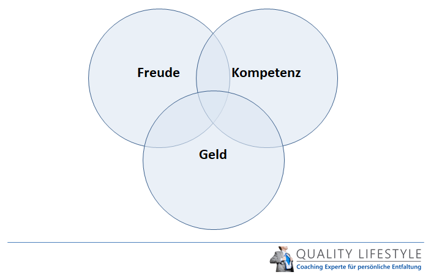

Finanzielle Kompetenz 2020
2020.11.28 09:16
Top tip finance
Top tip finance
Handel Tipp Der Redaktion Drucken Vorherige Wahrscheinlichkeit Vorheriges Lien Handel
Finanzielle Kompetenz 2020
Inhaltsverzeichnis:
Was ist "Finanzielle Kompetenz" ABBRECHEN 'Finanzielle Kompetenz' Die Bedeutung von FinanzbildungWas ist "Finanzielle Kompetenz"
Finanzielle Kompetenz ist die Bildung und das Verständnis verschiedener finanzieller Bereiche. Dieses Thema konzentriert sich auf die Fähigkeit, persönliche Finanzangelegenheiten auf effiziente Weise zu verwalten, und es beinhaltet das Wissen über angemessene Entscheidungen über persönliche Finanzen wie Investitionen, Versicherungen, Immobilien, Zahlung für College, Budgetierung, Ruhestand und Steuerplanung.
ABBRECHEN 'Finanzielle Kompetenz'
finanzielle Kompetenz umfasst auch die Beherrschung finanzieller Prinzipien und Konzepte wie Finanzplanung, Zinseszins, Schuldenmanagement, gewinnbringende Spartechniken und den Zeitwert von Geld. Der Mangel an finanzieller Bildung oder finanziellem Analphabetismus kann dazu führen, dass schlechte finanzielle Entscheidungen getroffen werden, die sich negativ auf das finanzielle Wohlergehen eines Einzelnen auswirken können. Infolgedessen hat die Bundesregierung die Financial Literacy and Education Commission ins Leben gerufen, die Ressourcen für Menschen bereitstellt, die mehr über Finanzwissen lernen wollen.Die wichtigsten Schritte zur Erreichung der finanziellen Allgemeinbildung umfassen das Erlernen der Fähigkeiten zur Erstellung eines Haushaltsplans, die Fähigkeit, die Ausgaben zu verfolgen, die Techniken zur Begleichung von Schulden zu erlernen und die Altersvorsorge effektiv zu planen. Diese Schritte können auch die Beratung durch einen Finanzexperten umfassen. Zur Aufklärung über das Thema gehört es zu verstehen, wie Geld funktioniert, finanzielle Ziele zu erreichen und zu erreichen sowie interne und externe finanzielle Herausforderungen zu bewältigen.
Die Bedeutung von Finanzbildung
Finanzielle Bildung hilft Menschen, sich selbst zu versorgen, damit sie finanzielle Stabilität erlangen können. Diejenigen, die das Thema verstehen, sollten in der Lage sein, mehrere Fragen zu Käufen zu beantworten, z. B. ob ein Artikel benötigt wird, ob er erschwinglich ist und ob es sich um einen Vermögenswert oder eine Verbindlichkeit handelt.
Dieses Feld demonstriert das Verhalten und die Einstellungen, die eine Person über Geld besitzt, das auf ihr tägliches Leben angewendet wird. Finanzielle Bildung zeigt, wie eine Person finanzielle Entscheidungen trifft. Diese Fertigkeit kann einer Person helfen, eine finanzielle Straßenkarte zu entwickeln, um herauszufinden, was er verdient, was er ausgibt und was er schuldet. Dieses Thema betrifft auch Kleinunternehmer, die einen großen Beitrag zu Wirtschaftswachstum und Stabilität leisten.
Finanzieller Analphabetismus betrifft alle Altersgruppen und alle sozioökonomischen Ebenen. Finanzieller Analphabetismus führt dazu, dass viele Menschen Opfer von räuberischer Kreditvergabe, Subprime-Hypotheken, Betrug und hohen Zinssätzen werden, was möglicherweise zu schlechten Krediten, Insolvenz oder Abschottung führt.
Der Mangel an finanzieller Bildung kann dazu führen, dass große Schulden geschuldet werden und schlechte finanzielle Entscheidungen getroffen werden.Zum Beispiel sind die Vorteile oder Nachteile von festen und variablen Zinssätzen Konzepte, die leichter zu verstehen sind und fundierte Entscheidungen darüber treffen, ob Sie über Finanzkompetenz verfügen. Basierend auf Forschungsdaten der Financial Industry Regulatory Authority sind 63% der Amerikaner finanziell Analphabeten. Ihnen fehlen die grundlegenden Fähigkeiten, um ihre Bankkonten zu versöhnen, ihre Rechnungen pünktlich zu bezahlen, Schulden zu tilgen und für die Zukunft zu planen.
Finanzielle Bildung sollte auch organisatorische Fähigkeiten, Liebe zum Detail, Verbraucherrechte, Technologie und globale Wirtschaft einschließen, da der Zustand der globalen Wirtschaft die US-Wirtschaft stark beeinflusst.
← Hebelfreier Free Cash Flow Volatilität SkewEmpfohlen
ÜBer Nacht Position
Tagesgeld-Index-Swap
ÜBer Nacht Return
Empfohlen
HandelGesponsert ADR
DEFINITION von Sponsored ADR Ein American Depositary Receipt (ADR), ausgestellt von einer Bank im Auftrag der ausländischen Gesellschaft, deren Eigenkapital als Basiswert dient. Ein gesponsertes ADR schafft eine Rechtsbeziehung zwischen dem ADR und dem ausländischen Unternehmen, die die Kosten für die Ausgabe des Wertpapiers übernimmt.
HandelSpontanverpflichtungen
DEFINITION von 'Spontaneous Liabilities' Verbindlichkeiten eines Unternehmens, die automatisch aufgrund des Tagesgeschäfts des Unternehmens akkumuliert werden. Spontane Verbindlichkeiten können an Umsatzveränderungen gebunden werden - wie z. B. die Kosten von verkauften Waren und Verbindlichkeiten. Diese Verbindlichkeiten können auch fixiert werden, wie regelmäßige Zahlungen für langfristige Verbindlichkeiten zeigen.
Interessante Artikel Tipp Der Redaktion10 Dinge, die Sie wahrscheinlich nicht über das Geld in Ihrer Brieftasche wussten
5 Wege, die Sie zu viel investieren
ÜBlich, übliche und angemessene Gebühren
Utilitarismus
Tipp Der Redaktion
HandelAutomatischer Stabilisator
HandelAutonome Ausgaben
HandelAutoregressiver integrierter gleitender Durchschnitt - ARIMA
HandelAutoregressive bedingte Heteroskedastizität - ARCH
Interessante Artikel
HandelSubprime-Autokredit
DEFINITION von Subprime Auto Loan Eine Art von Autokredit, der für Menschen mit minderwertigen Kredit-Scores oder eingeschränkter Kredit-Historie genehmigt wurde. Es gibt keinen offiziellen Cutoff-Score für Prime versus Subprime, aber es sollte beachtet werden, dass diese Kredite höhere Zinssätze als gleichwertige Prime Loans tragen und auch mit Vorfälligkeitsentschädigungen verbunden sein können, wenn der Kreditnehmer das Darlehen vorzeitig abbezahlt.
HandelU. S. Bureau of Gravur und Druck - BEP
HandelAmt für Volkszählung
Beliebte Beiträge
HandelHandel Basismetalle mit diesen 3 ETFs (CUPM, FOIL)
HandelWatch for Breakouts in diesen Commodity ETFs (USO, GLD)
HandelKommunikationsgiganten fallen trotz iPhone-Hype zusammen (AAPL, VZ)
HandelAufwärts Breakout kommt? Untersuchen Sie die Diagrammmuster
Lang L: none
[email protected]- Finanzielle Kompetenz 2020 - Top tip finance
- Finanzielle Kompetenz - Seminare & Gesprächsabende
- Finanzielle Kompetenz & Ausflippen - Rod Dreher - 2020
- Geld-Kompetenz: Geld-Kompetenz
- Finanzielle Kompetenz - Budgetierung & EinsparungenWeiterlesen
- Finanzielle Kompetenz Onlinekurs - Digistore24
- Mehr Neukunden. Mehr Geld. Finanzielle Unabhängigkeit!
- Der erleuchtete Investor - Christian Bischoff
- Börseneinstieg fr Frauen leicht gemacht
- Finanzielle Kompetenz | Udemy
- Finanzielle Kompetenz 2020 - Top tip finance
Vielleicht gehören Sie zu den Menschen, die finanzielle Kompetenz - die Fähigkeit, verantwortungsbewusst mit Geld umzugehen - nie erlernt haben. Ganz klar, leichter hat es der, dem die Eltern von klein auf beigebracht und vorgelebt haben, Geld wertzuschätzen, Geld wichtig zu nehmen - Geld zu sparen und GELD-KOMPETENZ zu erwerben.
- Finanzielle Kompetenz - Seminare & Gesprächsabende
Finanzielle Kompetenz - ein Kurs, der das wesentliche Wissen und notwendige Mindset vermittelt, damit Du Deine finanziellen Ziele erreichst.. Mein Ziel ist die praktische Umsetzung.Deswegen werde ich Dich in diesem Kurs nicht zum Experten für Anlageprodukte ausbilden. Wenn Du "mitmachst" und Deine Tagesaufgaben erledigst, wirst Du sofort Veränderungen und Ergebnisse spüren.
- Finanzielle Kompetenz & Ausflippen - Rod Dreher - 2020
Finanzielle Kompetenz. Entwickeln Sie Ihre persönlichen finanziellen Fähigkeiten. Main menu Skip to content. ... Zinsen bekommen Sie bei der Bank, eine Rendite dann, wenn Sie das Geld am Kapitalmarkt anlegen. Wer Aktien kauft, hat die Möglichkeit, Dividenden zu bekommen, ist jedoch auch an Kursschwankungen beteiligt.
- Geld-Kompetenz: Geld-Kompetenz
Die finanzielle Kompetenz aufzubauen ist eine der wichtigsten Fähigkeiten im Leben, wird jedoch von vielen Menschen vernachlässigt. Es ist nie zu spät,sein Wissen über Finanzfragen zu verbessern und sich die Kompetenz anzueignen, die benötigt wird um sein Geld langfristig und nachhaltig zu managen und Vermögen aufzubauen.
- Finanzielle Kompetenz - Budgetierung & EinsparungenWeiterlesen
Finanzielle Kompetenz hilft und unterstützt Sie und Ihre Kinder, klug mit Geld umzugehen. Sie sparen, wo es sinnvoll ist und geben Geld bewusst aus.
- Finanzielle Kompetenz Onlinekurs - Digistore24
Zur Aufklärung über das Thema gehört das Verständnis der Funktionsweise von Geld, das Erstellen und Erreichen von Finanzzielen sowie das Management interner und externer finanzieller Herausforderungen. Die Bedeutung der Finanzbildung . Finanzielle Kompetenz hilft dem Einzelnen, sich selbst zu versorgen, um finanzielle Stabilität zu erreichen.
- Mehr Neukunden. Mehr Geld. Finanzielle Unabhängigkeit!
"Finanzielle Kompetenz" ist ein umfassendes Video-Training, mit dem du lernst, souverän deine Finanzen zu händeln und anschließend mehr Geld zur Verfügung zu haben. In 5 Modulen wird dir das Know-How vermittelt, das zum erfolgreichen Umgang mit dem eigenen Geld notwendig ist: Wie du deine Sparrate erhöhen und Rücklagen bilden kannst.
- Der erleuchtete Investor - Christian Bischoff
Finanzielle Kompetenz ist in der heutigen Zeit unerlässlich. Die Schere zwischen arm und reich klafft immer mehr auseinander. Selbst die Zinslandschaft ist nicht mehr das, was sie mal war – “Guthabengebühr” könnte bald für Menschen anfallen, die Ihr Geld aufs Sparbuch legen.
- Börseneinstieg fr Frauen leicht gemacht
Mehr Geld. Finanzielle Unabhängigkeit! Die Erfolgsmethode, die dich als Finanzberater besser, stärker und souveräner macht. ... Was genau ist erlebbare Finanzkompetenz und wieso bringt diese Kompetenz dich zu mehr Geld, mehr Kunden, mehr Empfehlungen; Wie schaffst du es, dass du jederzeit alle deine Themen und Produkte verkaufen kannst ...
- Finanzielle Kompetenz | Udemy
Finanzielle Kompetenz wird hauptsächlich im Zusammenhang mit persönlichen Finanzfragen verwendet. Finanzielle Kompetenz beinhaltet oft das Wissen um richtige Entscheidungen in Bezug auf bestimmte persönliche Finanzbereiche wie Immobilien, Versicherungen, Investitionen, Sparen (insbesondere für das College), Steuerplanung und Ruhestand.
Vielleicht gehören Sie zu den Menschen, die finanzielle Kompetenz - die Fähigkeit, verantwortungsbewusst mit Geld umzugehen - nie erlernt haben. Ganz klar, leichter hat es der, dem die Eltern von klein auf beigebracht und vorgelebt haben, Geld wertzuschätzen, Geld wichtig zu nehmen - Geld zu sparen und GELD-KOMPETENZ zu erwerben.
Finanzielle Kompetenz - ein Kurs, der das wesentliche Wissen und notwendige Mindset vermittelt, damit Du Deine finanziellen Ziele erreichst.. Mein Ziel ist die praktische Umsetzung.Deswegen werde ich Dich in diesem Kurs nicht zum Experten für Anlageprodukte ausbilden. Wenn Du "mitmachst" und Deine Tagesaufgaben erledigst, wirst Du sofort Veränderungen und Ergebnisse spüren.
Finanzielle Kompetenz. Entwickeln Sie Ihre persönlichen finanziellen Fähigkeiten. Main menu Skip to content. ... Zinsen bekommen Sie bei der Bank, eine Rendite dann, wenn Sie das Geld am Kapitalmarkt anlegen. Wer Aktien kauft, hat die Möglichkeit, Dividenden zu bekommen, ist jedoch auch an Kursschwankungen beteiligt.
Die finanzielle Kompetenz aufzubauen ist eine der wichtigsten Fähigkeiten im Leben, wird jedoch von vielen Menschen vernachlässigt. Es ist nie zu spät,sein Wissen über Finanzfragen zu verbessern und sich die Kompetenz anzueignen, die benötigt wird um sein Geld langfristig und nachhaltig zu managen und Vermögen aufzubauen.
Finanzielle Kompetenz hilft und unterstützt Sie und Ihre Kinder, klug mit Geld umzugehen. Sie sparen, wo es sinnvoll ist und geben Geld bewusst aus.
Zur Aufklärung über das Thema gehört das Verständnis der Funktionsweise von Geld, das Erstellen und Erreichen von Finanzzielen sowie das Management interner und externer finanzieller Herausforderungen. Die Bedeutung der Finanzbildung . Finanzielle Kompetenz hilft dem Einzelnen, sich selbst zu versorgen, um finanzielle Stabilität zu erreichen.
"Finanzielle Kompetenz" ist ein umfassendes Video-Training, mit dem du lernst, souverän deine Finanzen zu händeln und anschließend mehr Geld zur Verfügung zu haben. In 5 Modulen wird dir das Know-How vermittelt, das zum erfolgreichen Umgang mit dem eigenen Geld notwendig ist: Wie du deine Sparrate erhöhen und Rücklagen bilden kannst.
Finanzielle Kompetenz ist in der heutigen Zeit unerlässlich. Die Schere zwischen arm und reich klafft immer mehr auseinander. Selbst die Zinslandschaft ist nicht mehr das, was sie mal war – “Guthabengebühr” könnte bald für Menschen anfallen, die Ihr Geld aufs Sparbuch legen.
Mehr Geld. Finanzielle Unabhängigkeit! Die Erfolgsmethode, die dich als Finanzberater besser, stärker und souveräner macht. ... Was genau ist erlebbare Finanzkompetenz und wieso bringt diese Kompetenz dich zu mehr Geld, mehr Kunden, mehr Empfehlungen; Wie schaffst du es, dass du jederzeit alle deine Themen und Produkte verkaufen kannst ...
Finanzielle Kompetenz wird hauptsächlich im Zusammenhang mit persönlichen Finanzfragen verwendet. Finanzielle Kompetenz beinhaltet oft das Wissen um richtige Entscheidungen in Bezug auf bestimmte persönliche Finanzbereiche wie Immobilien, Versicherungen, Investitionen, Sparen (insbesondere für das College), Steuerplanung und Ruhestand.
